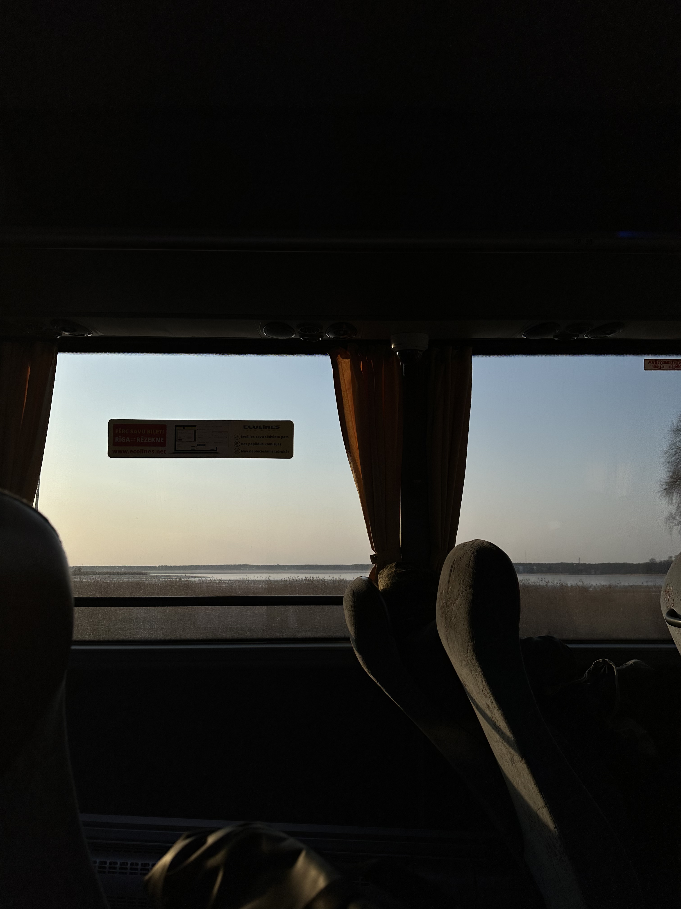
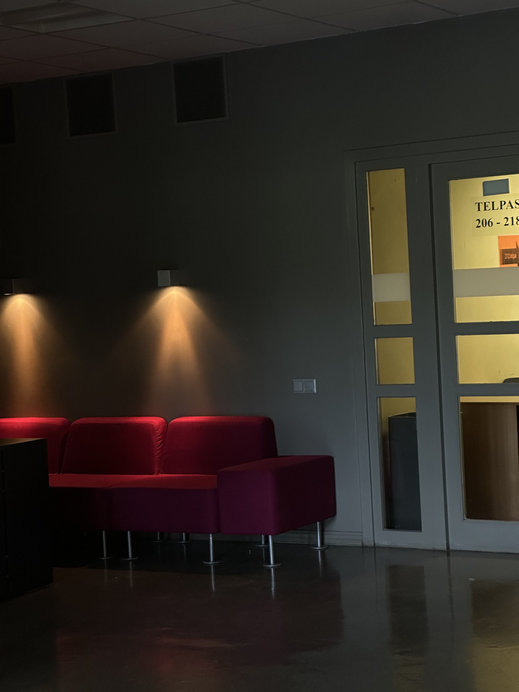
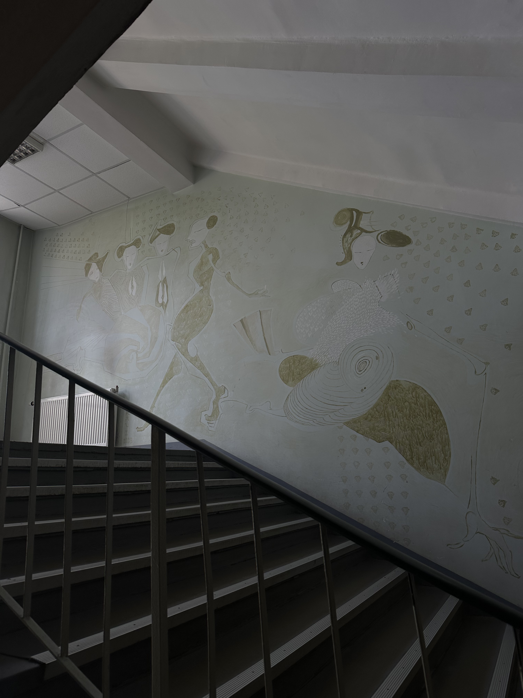
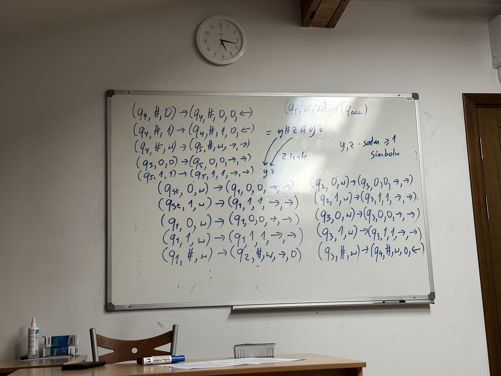
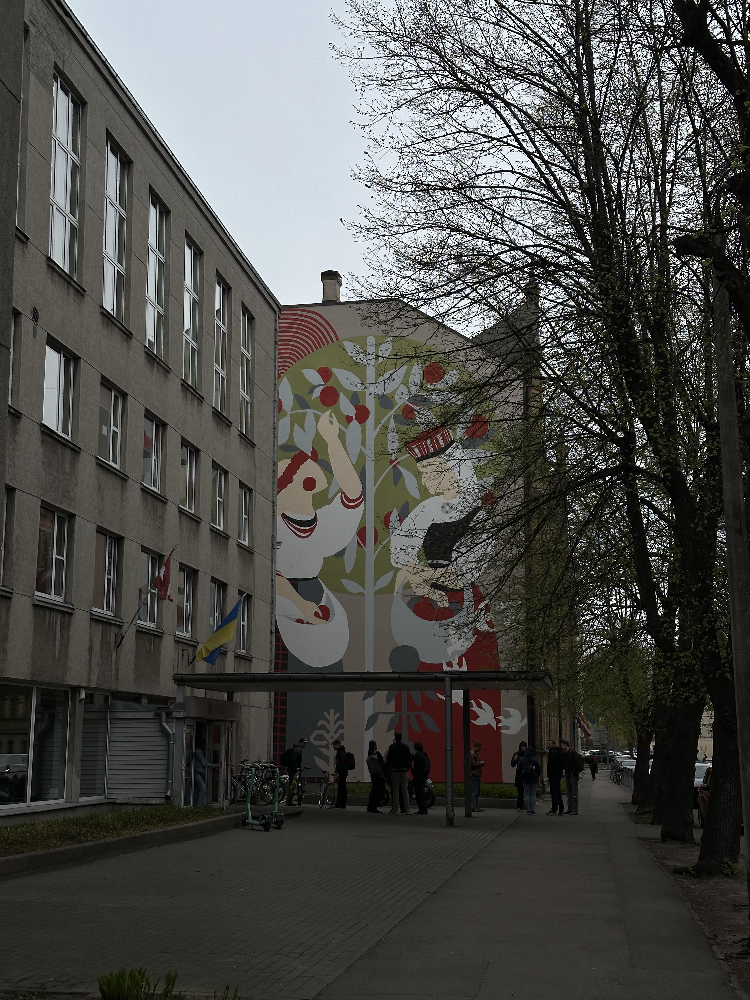
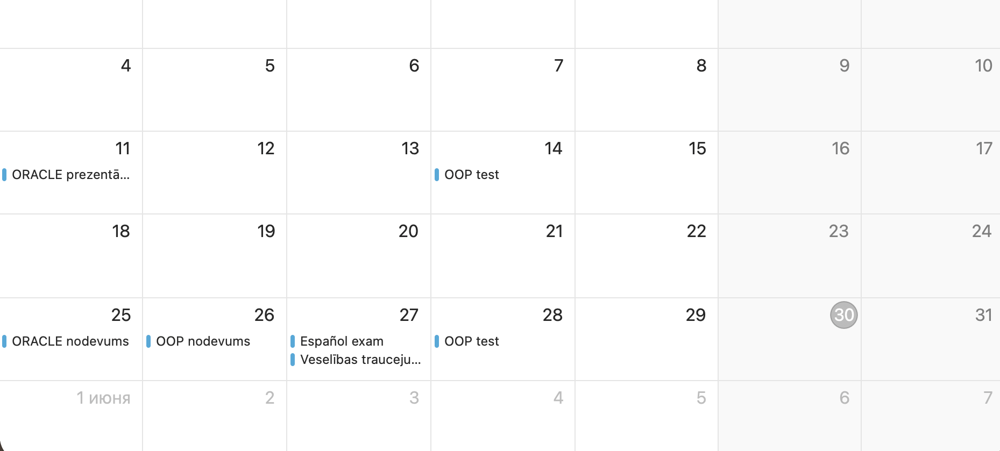
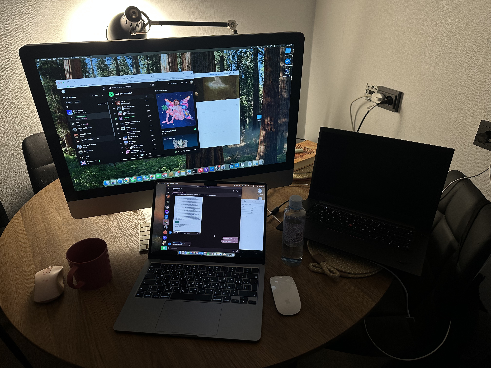
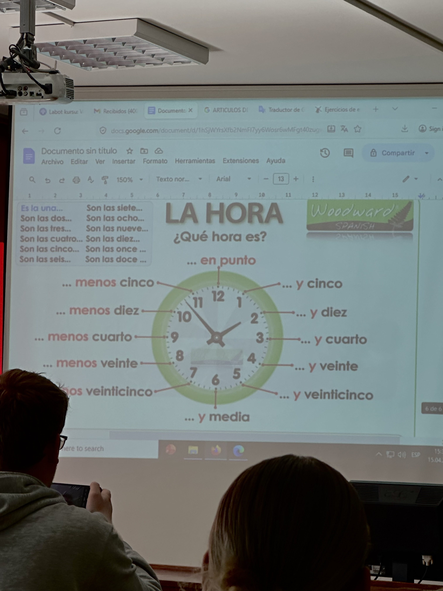
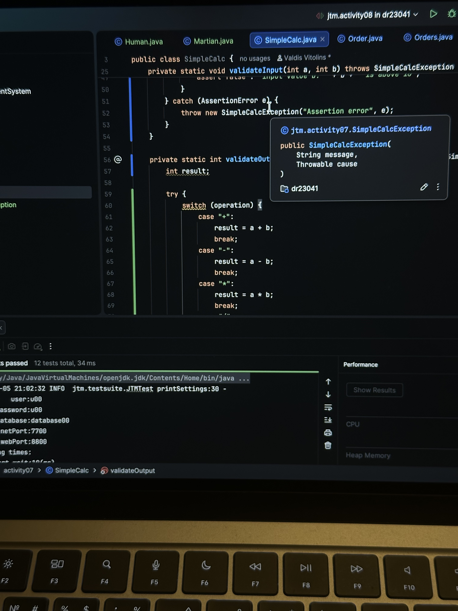

Pirmdiena
Dabaszinātnes un Oracle laboratorijas vai mācības, pēc tam darbs. Nedēļa sākas diezgan intensīvi.





Šajā sadaļā ir pārskatāma mana mācību nedēļa, kas apvienota ar pārvietošanos starp LU korpusiem Rīgā un darba grafiku. Tas ir skats uz dinamisku ikdienu, kur studijas jāsavieno ar darbu un ikdienas tempu.
Datorzinātņu studijas LU - zināšanas, ko var izmantot jau studiju laikā un ārpus tām.
Dabaszinātnes un Oracle laboratorijas vai mācības, pēc tam darbs. Nedēļa sākas diezgan intensīvi.
Algoritmu teorija, materiāla atkārtošana un darbs. Šī diena vairāk saistīta ar saprašanu un praksi.
Spāņu valoda Humanitāro zinātņu fakultātē un pēc tam darbs. Citāda diena, kas izsit no tehniskā ritma.
OOP tiešsaistes lekcijas un darbs. Diena paiet starp lekcijām, uzdevumiem un ikdienas pienākumiem.
Mācībās brīvdiena, bet ir darbs. Parasti tā ir mierīgāka diena bez lekcijām, taču ne pilnīgi brīva.
Nedēļā ir gan parastās lekcijas, gan praktiskie darbi. Dažās dienās vairāk jāklausās un jāiedziļinās teorijā, citās vairāk jāstrādā pašai.
Daļa mācību notiek arī caur kopīgiem darbiem. Ar kursabiedriem sanāk apspriest idejas, sadalīt uzdevumus un kopā veidot studiju projektus.
Bez obligātajiem uzdevumiem ir arī vieta saviem mazajiem projektiem. Tie palīdz labāk saprast tēmas un pamazām krāt pieredzi ārpus lekcijām.

Studijām parasti veltu apmēram 10–15 stundas nedēļā. Šis laiks ietver lekcijas, laboratorijas darbus, patstāvīgu gatavošanos un darbu pie mājasdarbiem.
Šobrīd OOP kursā apgūstam Java un grupā veidojam kopīgu projektu. Paralēli jau ir izstrādāti darbi Oracle Rīki un OOP priekšmetos, kas ļāva iegūt pirmo praktisko pieredzi.
Lielāko daļu zināšanu nostiprinu praktiski. Laboratorijas darbi, Oracle Rīki un OOP projekti palīdz saprast, kā teorija tiek izmantota reālos uzdevumos.
Lai gan studēju datorzinātnes, visvairāk man patīk spāņu valoda. Humanitāro zinātņu fakultātes nodarbības dod iespēju attīstīt arī prasmes ārpus tehniskās jomas.
Apmēram 10–15 stundas nedēļā veltu studijām. Regulāras lekcijas, laboratorijas un patstāvīgais darbs palīdz pakāpeniski attīstīt profesionālās prasmes.
Studiju laikā izveidoti darbi Oracle Rīki un OOP kursos. Projekti palīdz ne tikai izpildīt prasības, bet arī veidot praktisku izpratni par programmēšanu.
Interesantākā pieredze šajā semestrī man bija spāņu valodas apguve Humanitāro zinātņu fakultātē. Tā deva iespēju paskatīties uz studijām no cita skatpunkta.


